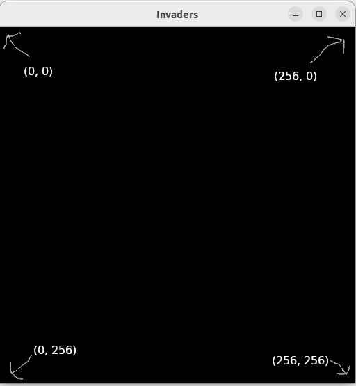
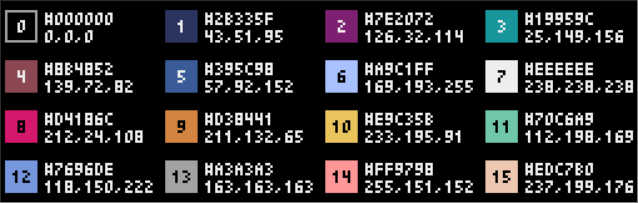
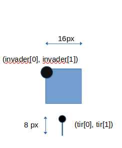
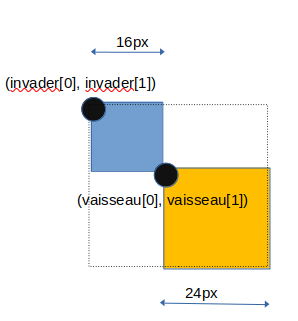
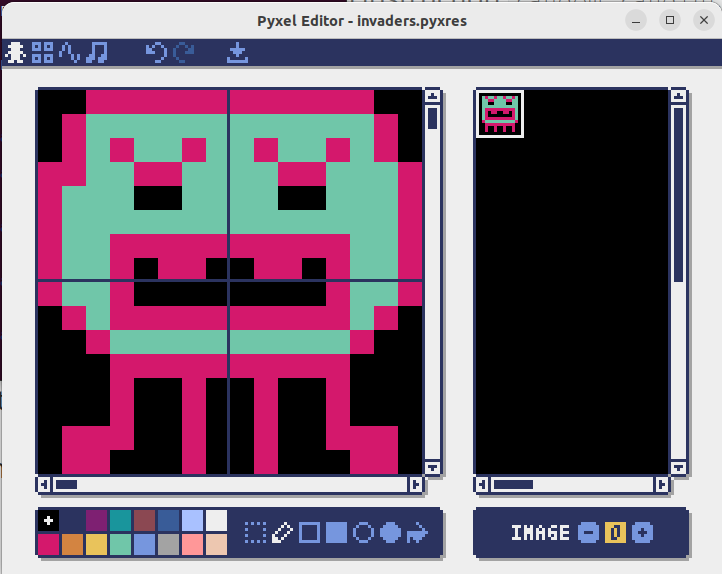
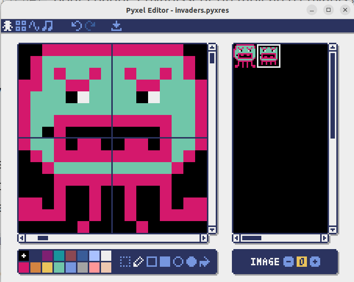

Invaders¶
Pyxel¶
Nous allons utiliser un module, c'est à dire une bibliothèque de fonctions, dédié à la création de jeu en 2D : pyxel.
Ouvrez Thonny ;
Enregistrer un nouveau fichier sous le nom invaders.py dans un répertoire nommé
projet invaders.Si le module
pyxeln'est pas encore installé, il faut :- suivre le menu de Thonny òutils/gérer les paquets` ;
- taper
pyxeldans la barre de texte et lancer la recherche ; - installer le module
pyxel.
Remarque : on peut également taper la commander pip install -U pyxel dans la console du système que vous ouvrirez en suivant le menu outils/console du système sous Thonny.
Avec pyxel, la structure du code est toujours la même. Collez le code ci-dessous dans la partie programme (en haut) de Thonny.
# importation des modules nécessaires
import pyxel
import random
#########VARIABLES GLOBALE
#ici on définit toutes les variables globales
################### On placera les fonctions annexes ci-dessous
###################Calculs indispensable au jeu
def calculer() :
'''
ici on effectue tous les calculs nécessaires au jeu
'''
###################Affichage des objets du jeu
def afficher():
'''
ici on dessine tous les objets du jeu
'''
pyxel.cls(0) #peint l'écran en noir pour le vider
##############lancement du programme
pyxel.init(256, 256, 'Invaders', fps = 30)
pyxel.run(calculer, afficher)
pyxel.quit()
Le seul code qui se lance à l'exécution et celui qui se trouve en bas :
pyxel.init(256, 256, 'Invaders', fps = 30)affiche la fenêtre graphique de 256 pixels sur 256 pixels nommées Invaders à 30 frames par secondepyxel.run(calculer, afficher)lance en réalité une boucle qui appelle 30 fois par seconde la fonctioncalculer(spoiler, elle va servir à réaliser les calculs) et la fonctionafficher(besoin d'un spoiler ou ça ira ?)
Exécutez le code et regardez la fenêtre graphique qui s'affiche :
Son origine est en haut à gauche.
l'axe des abscisses est orienté vers la droite.
l'axe des ordonnées est orienté vers le bas : plus en descend plus l'ordonnée est grande.

Les Envahisseurs¶
Ajouter des envahisseurs ... carrés¶
Dans la partie tout en haut dédiées aux variables globales, déclarez tab_invaders, un tableau vide (pour l'instant ...).
Un envahisseur sera simplement défini par ses coordonnées. A l'initialisation d'un envahisseur, il se trouvera tout en haut, à l'ordonnée 0 et à une position aléatoire en abscisse en 16 et 240. Ainsi, un envahisseur e de coordonnées (23, 0) sera représenté par le tableau e = [23, 0] :
- e[0] est l'abscisse de l'envahisseur;
- e[1] est son ordonnée ;
Pour gérer le temps, on va utiliser la variable pyxel.frame_count :
- Cette dernière a pour valeur le nombre de fois que la fenêtre a été raffraichie.
- Toutes les 10 frames, c'est à dire chaque fois que
pyxel.frame_countest divisible par 10, on ajoutera un envahisseur au tableau d'envahisseurs.
Pour afficher un envahisseur, nous allons pour l'instant nous contenter d'un rectangle de 16 pixels sur 16 pixels en utilisant l'instruction pyxel.rect(x, y, longueur, hauteur, couleur).
x est l'abscisse du coin en haut à gauche ;
y est l'ordonnée du coin en haut à gauche ;
longueur et hauteur sont les dimensions du rectangle.
La couleur est un entier entre 0 et 16 au choix :

Codez
- Codez, dans la partie fonctions annexes, une fonction
ajouter_envahisseurde paramètretab_invadersun tableau d'envahisseurs, qui ajoute au tableau tab_invaders un envahisseurs. - Dans la fonction
calculer, sipyxel.frame_count % 10 == 0alors, appelez la fonctionajouter_envahisseurs. - Dans la fonction
afficher, pour chaque envahisseur du tableau d'envahisseurs, afficher un rectangle tel qu'il est indiqué plus haut.
Déplacer les envahisseurs¶
Pour déplacer les envahisseurs, il suffit d'augmenter leur ordonnée (vous vous rappelez bien que l'axe des ordonnées pointe vers le bas ...). Mais il faudra retirer l'envahisseur du tableau si cette ordonnée dépasse 256 car il sortira alors de la fenêtre graphique.
Codez
- Dans la fonction
calculer, pour chaque envahisseur du tableau d'envahisseurs :- déplacez le de 2 pixels vers le bas ;
- s'il sort de la fenêtre enlevez le du tableau.
Le vaisseau¶
Initialisation et affichage¶
Le vaisseau va être lui aussi défini par des coordoonées et son score. la variable globale vaisseau = [116, 224, 0] du type list, le représentera :
vaisseau[0]est l'abscisse du vaisseau;vaisseau[1]est son ordonnée;vaisseau[2]est le score du vaisseau.
Pour afficher le vaisseau, on va à nouveau dessiner un rectangle, mais il sera un peu plus grand et fera 24 pixels sur 24 pixels.
Codez
Dans la fonction dessiner :
- affichez le rectangle qui représente le vaisseau;
- affichez le score en haut à gauche en utilisant l'instruction
pyxel.text(x, y, chaine_de_caractère, couleur).
Dans la fonction calculer :
- si un envahisseur sort de la fenêtre, le score du vaisseau diminue de 50.
Déplacements¶
Pour gérer les événements clavier, c'est à dire les interactions entre le joueur et le clavier, pyxel utilise l'instruction pyxel.btn(touche) qui renvoie True si la touche a été pressée et False sinon.
Comme c'est la première fois, voici un peu d'aide avec la fonction deplacer partiellement écrite :
def deplacer(vaisseau):
'''
modifie les coordonnées du tableau du vaisseau
: param vaisseau (list)
: pas de return, effet de bord sur vaiseau
'''
if pyxel.btn(pyxel.KEY_Q):
pyxel.quit()
if pyxel.btn(pyxel.KEY_RIGHT) and vaisseau[0] < 256 - 24 : # réfléchissez dur ce à quoi sert le vaisseau[0] < 256 - 24...
vaisseau[0] += 4
if pyxel.btn(pyxel.KEY_LEFT) and vaisseau[0] > 0 : # réflechissez sur ce à quoi sert vaisseau[0] > 0
vaisseau[0] -= 4
Codez
- copiez-collez la fonction
deplacerci-dessus ; - complétez cette fonction afin que le vaisseau puisse également se déplacer vers le haut et vers le bas sans toutefois sortir de la zone de jeu.
- Dans la fonction
calculer, appelez la fonctiondeplacer.
Evidemment, on teste au fur et à mesure !
Les tirs¶
Voilà donc comment le vaisseau tire :
Nous aurons besoin d'une variable globale
tab_tirsinitialialement vide.Chaque fois que le joueur presse la touche
ESPACE, on ajoute un tir au tableau de tirs, à condition qu'il n'y en ait pas déjà trop.Un tir sera modélisé par un tableau contenant ses coordonnées.
Au départ, un tir est initialisé juste au dessus du vaisseau et en son milieu.
A chaque appel de la fonction
calculer, l'ordonnée de chaque tir diminuera de 8, ce qui le fera monter vite.On représentera,dans la fonction
afficher, chaque tir par un rectangle de 8 pixels de haut et de 1 de large.
Codez
- Codez la fonction
ajouter_tir, de paramètretab_tirs, un tableau de tirs, qui ajoute un nouveau tir au tableautab_tirsavec les coordonnées adéquates ; - Modifiez la fonction
deplacerpour appeler la fonctionajouter_tirlorsque la toucheKEY_SPACEest pressée par le joueur ; - Dans la fonction
dessiner, pour chaque tir du tableau de tirs, dessinez le ; - Dans la fonction
calculer, pour chaque tir du tableau de tirs, faites le monter. Si l'ordonnée du tir devient négative, retirez le du tableau de tir.
Evidemment, on teste au fur et à mesure !
Destructions ...¶
... des envahisseurs¶
Si un des tirs touche un envahisseur, ce dernier est détruit.

Réfléchissez puis codez
- A quelles conditions sur tir[0], tir[1], invader[0] et invader[1] l'envahisseur sera touché par le tir ?
- Codez la fonction annexe
est_touche(invader, tir)qui renvoieTruesi l'invader est touché par letiretFalseSinon. - Dans la fonction
calculerpour chaque envahisseur, pour chaque tir, si un envahisseur est touché par un tir alors :- l'ordonnée du tir passe à -100 ;
- celle de l'envahisseur à 300 ;
- le score du vaisseau augmente de 100.
... du vaisseau¶
Le vaisseau est détruit lorsqu'un envahisseur le percute.

Réfléchissez puis codez
A quelles conditions sur invader[0], invader[1], vaisseau[0] et vaisseau[1] l'envahisseur touchera le vaisseau ?
Codez la fonction annexe ci-dessous
est_perdu(vaisseau, invader)qui renvoieTruesi l'invadertouche levaisseauetFalseSinon.Dans la fonction
calculer, pour chaque envahisseur si un envahisseur touche le vaisseau alors :- l'ordonné de l'envahisseur passe à 300 afin de sortir l'envahisseur de la fenêtre de jeu ;
- les coordonnées de vaisseau passent à [300, 300] afin de sortir le vaisseau de la fenêtre et de l'empêcher d'être déplacé ;
- Dans la fonction
afficher, si les coordonnées du vaisseau sont [300, 300], alors on affiche le messageGame Overgrâce à l'instructionpyxel.text(x, y, chaine_de_caractère, couleur).
Evidemment, testez au fur et à mesure
piou piou¶
Ici, on va ajouter un peu de son.
AJouter les deux lignes de code ci-dessous après avoir initialiser la fenêtre graphique (tout en bas) :
##############lancement du programme
pyxel.init(256, 256, 'Invaders')
pyxel.sound[0].set("a3a2c1a1", "p", "7", "s", 5) # défini le son d'indice 0
pyxel.sound[1].set("a3a2c2c2", "n", "7742", "s", 10) # défini le son d'indice 1
pyxel.run(calculer, afficher)
Pour jouer un son, on utilise la commande pyxel.play(1, n, loop = False) pour jouer le son d'indice n.
Codez
Jouez le son d'indice 0 lorsque le vaisseau tir et le son d'indice 1 lorsque quelque chose explose.
Un peu de graphisme¶
Editeur graphique¶
Pyxel dispose d'un éditeur pour les graphisme (et le son aussi d'ailleurs)
Pour l'ouvrir, dans le menu de Thonny, suivez outils/console système.
Tapez maintenant la commande pyxel edit invaders pour ouvrir l'éditeur et créer un fichier nommé invaders.pyxres.
Vous pouvez maintenant éditer un envahisseur de 16 pixels sur 16 pyxels comme ci-dessous :

Remarques :
N'oubliez pas de sauvegarder en utilisant CTRL + S et vérifiez que le fichier invaders.pyxelres est bien présent dans votre dossier, à côté du programme invaders.py !!
Notez en bas à gauche que vous dessiner l'image no 0. On appelle cela la planche no 0. Vous pouvez utiliser 3 planches numérotez de 0 à 2.
Vous pouvez ainsi dessiner plusieurs envahisseurs ce qui permettra de faire une petite animation.

Revenons au code¶
Pour charger votre fichier invaders.pyxres dans votre programme Python, juste après avoir initialisé la fenêtre graphique, on insère l'instruction : pyxel.load("invaders.pyxres").
Ensuite, pour dessiner l'envahisseur à la place du rectangle qui le représentait, on utilise l'instruction
pyxel.blt(x, y, no_planche, position_image_x, position_image_y , longueur, hauteur, couleur transparente) qui :
se place dans la planche no_planche ;
copie la zone graphique de longueur et hauteur précisée à partir des coordonnées (position_image_x, position_image_y) aux coordonnées (x, y) de la zone de jeu.
Ainsi pyxel.blt(invader[0], invader[1],0, 0, 0, 16, 16, 0) affichera l'invader de 16px sur 16px dessiné à partir de (0, 0) dans la planche 0, aux coordonnées lui correspondant avec le noir (0) comme couleur transparente.
De même, pyxel.blt(invader[0], invader[1], 0, 16, 0, 16, 16, 0) affichera l'invader de 16px sur 16px dessiné à partir de (16, 0) dans la planche 0 aux coordonnées lui correspondant avec le noir (0) comme couleur transparente.
Pour réaliser l'animation il suffit d'afficher le premier invaders si pyxel.frame_count % 10 < 5 et l'autre sinon. On peut bien entendu utiliser plus de trois dessins pour peaufiner l'animation...
Codez
Codez la fonction
afficher_invader(invader)qui affiche une des images représentant un envahisseur en selon la valeur depyxel.frame_count % 10;Modifiez la fonction
affichagepour appelerafficher_invaderau lieu d'afficher un carré.Faites la même chose pour le vaisseau : dessinez un vaisseau (ou plusieurs) de 24px sur 24px dans votre fichier invader.pyxres et remplacez le carré qui le représentait.
Des boss¶
Toutes les 500 frames (on utilisera frame_count % 500) , on va ajouter un boss à un tableau de boss.
Un boss :
est initialisé en haut à gauche de l'écran.
mesure 16px sur 16px et a un look différent des autres envahisseurs.
explose si un tir le touche 5 fois en faisant marquer 1000 points au joueur.
se déplace vers la droite et, lorsqu'il atteint l'extrémité droite de l'écran, réapparait à l'extrémité gauche de l'écran, un peu plus bas.
s'il percute le vaisseau ou arrive en bas de l'écran , la partie est perdue.
Pour modéliser un boss, on utilise :
- un tableau de boss nommé
tab_bossdéfini globalement et initialement vide. Ce tableau contiendra les boss en cours. - un boss est modélisé par un tableau du type
[abscisse, ordonnée, nbre_de_tirs_avant_sa_mort]. Par exemple le boss[100, 120, 3]se trouve aux coordonnées (100, 120) et doit êtrer touché 3 fois pour être éliminé.
Codez
- déclarez la variable globale
tab_boss = []; - codez la fonction
ajouter_boss()qui génère et nouveau boss et l'ajoute au tableautab_boss; - codez la fonction
deplacer_bossde paramètreboss, un boss, et qui le déplace comme prévu ; - codez la fonction
affiche_bossde paramètreboss, un boss, et qui affiche ce boss ; - codez la fonction
est_touchede paramètreboss, un boss, et qui renvoieTruesi le boss est touché par un tir etFalsesinon ; - codez la fonction
a_atteride paramètreboss, un boss, et qui renvoieTruesi le boss a atteri en bas de l'écrans etFalsesinon ; - modifier les fonctions
calculeretafficherafin de faire tourner tout cela correctement.
Tout fonction à merveille ? vou avez tout compris ? Merveilleux. Voilà un dernier petit défi :
Question
- le boss tire vers le bas toutes les 120 frames ;
- si un tir touche le vaisseau, la partie est terminée
Par Mieszczak Christophe
Licence CC BY SA